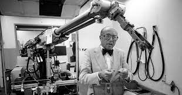

 De IRB6 was de eerste commercieel verkrijgbare
industriële robot die volledig elektrisch aangedreven en microprocessorgestuurd was. Hij werd in 1974
geïntroduceerd door het Zweedse bedrijf ASEA, dat later ABB Robotics werd.
De IRB6 was een revolutie in de robotindustrie. Hij was veiliger, nauwkeuriger en efficiënter dan zijn
hydraulische voorgangers.
De IRB6 had een bereik van 1,8 meter en een hefvermogen van 100 kilogram. Hij was uitgerust met zes
servomotoren, waardoor hij
een snelheid van 1,5 meter per seconde kon bereiken.